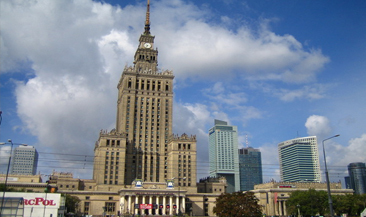
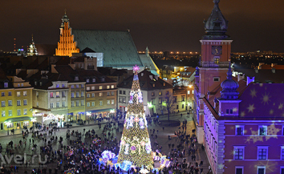
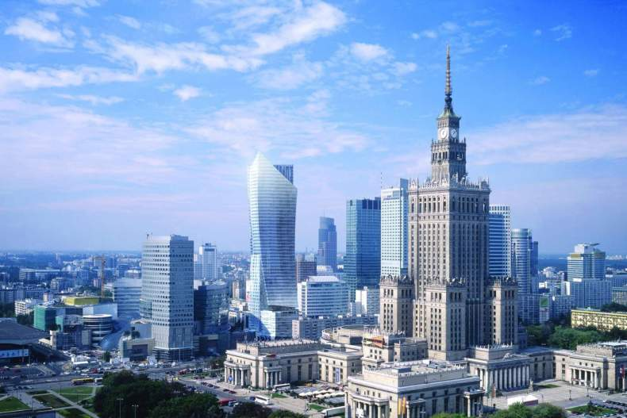

Варшава
Варшава – столица Польши, архитектура которой отражает долгую и сложную историю города. Здесь можно увидеть готические церкви и неоклассические дворцы, типовые дома советского периода и современные небоскребы. В самом сердце Старого города, практически полностью разрушенного во время Второй мировой войны и восстановленного в послевоенные годы, лежит Рыночная площадь. Ее окружают здания пастельных цветов и открытые летние кафе. В центре площади установлен памятник Варшавской сирене – символу города.
  